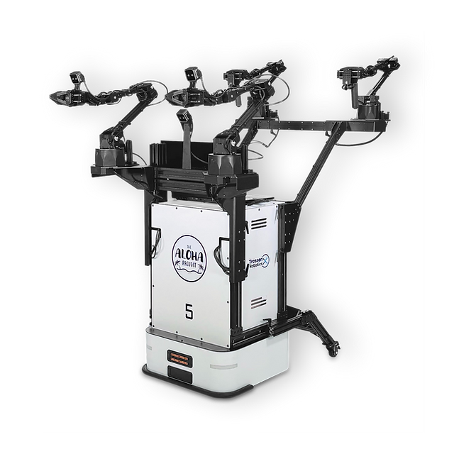
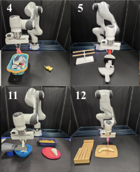
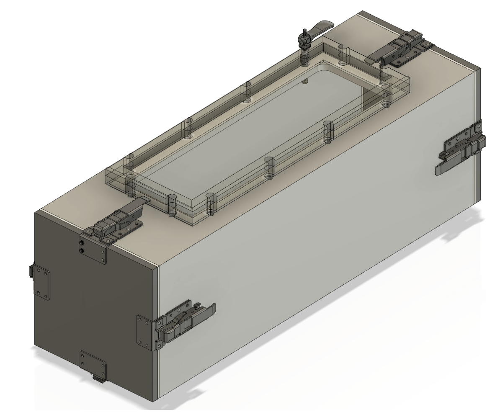
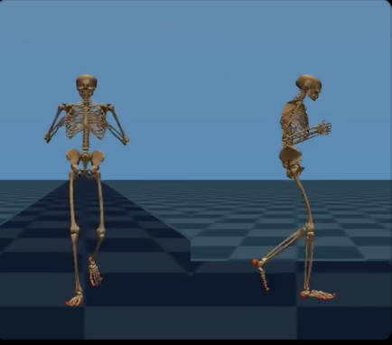
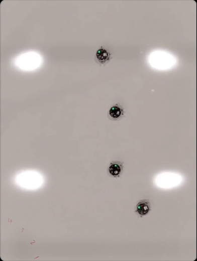
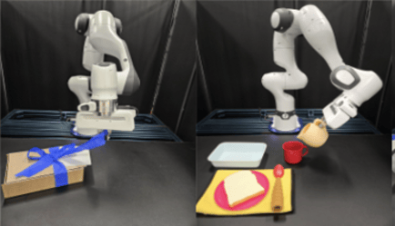
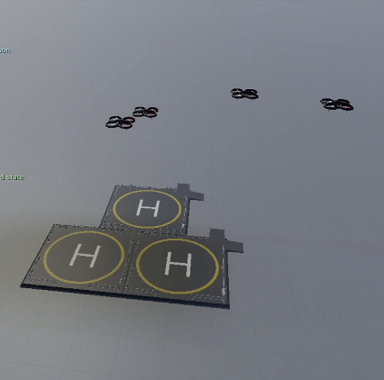
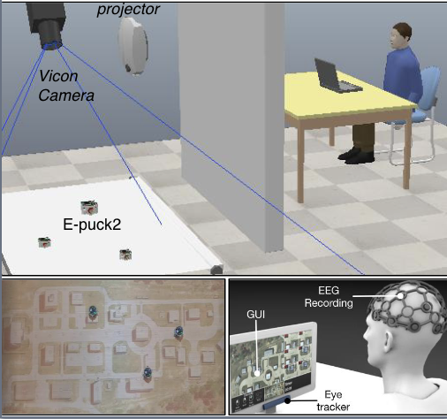

|
Hanvit Cho I am a Master's student in Mechanical Engineering at Stanford University and a researcher at the Stanford Vision and Learning Lab. My current work focuses on the development of intelligent robots capable of performing everyday tasks through brain-robot interfaces (BRIs), using neural signal decoding and advanced machine learning techniques. I am passionate about advancing robotic systems that can seamlessly collaborate with humans to enhance autonomy and task efficiency. Previously, I was a robotics intern at Centrillion Technology, where I applied bimanual mobile manipulation techniques to automate manufacturing processes. I also earned my B.S. in Mechanical Engineering at the University at Buffalo, where I contributed to advanced robotics research and developed a solar navigation system for street signs. My long-term goal is to merge my engineering expertise with robotics to create innovative, robust, and socially impactful systems that improve the quality of life and expand the possibilities for human-robot collaboration. | Email | Résumé | Google Scholar | LinkedIn | |
{kind=link}
Work Expereince |
|

|
Centrillion Technology Inc.
Robotics Internship June 2024 ~ September 2024 Report Presentation - Applied Trossen Robotics' Mobile ALOHA system (Bimanual Mobile Manipulation) to automate complex manufacturing processes, utilizing imitation learning techniques to enable robots to accurately replicate human actions in dynamic environments. - Conducted extensive experimentation with various policy algorithms (ACT, Diffusion), across diverse simulation and real-world environments, to optimize robotic performance and improve adaptability in different task scenarios. |
Relavant Projects |
|
|
ME326: Collaboriative Robotics
January 2025 ~ March 2025 Website | GitHub | Report - Developed an autonomous mobile manipulation system integrating computer vision, speech recognition, and motion planning to execute object retrieval tasks in dynamic environments. - Implemented speech-to-command processing and object detection using Google Cloud APIs, enabling the robot to understand user instructions and identify, locate, and grasp target objects. - Led the manipulation system development, refining object coordinate extraction, enhancing grasping precision, and ensuring smooth task execution through integrated navigation and control. |
|
|
ME210: Introduction to Mechatronics
January 2025 ~ March 2025 Website - Designed and built an autonomous kitchen robot using a Mecanum wheel drivetrain for omnidirectional movement, allowing precise navigation to gather ingredients, cook, and serve popcorn. - Engineered servo-driven mechanisms for ignitor activation, ingredient dispensing, and flag raising, integrating dual-Arduino control to synchronize movement and task execution. - Developed a finite state machine architecture, ensuring smooth autonomous task management and efficient environmental interactions. |
Research ExperienceMy research interests center on robotics, particularly in developing advanced robotic controllers for manufacturing automation, medical applications, and biomechanics enhancement through exoskeleton technology. |
|

|
Stanford Vision and Learning Lab
Stanford Univerisity June 2024 ~ Present Advisor: Ruohan Zhang 2024 Workshop CoRoboLearn Paper - Contributed to projects integrating advanced machine learning models with brain-computer interface (BCI) systems for robotics. - Collaborated with researchers to apply findings in real-world scenarios, emphasizing the seamless interaction between human intentions and robotic execution. - Focused on enhancing human-robot interaction using EEG signals by developing efficient algorithms for improved brain signal decoding. - Minimized user training time and created intuitive applications for robots to perform everyday tasks with minimal oversight. |

|
Salisbury Robotics Lab
Stanford Univerisity March 2024 ~ June 2024 Advisor: J. Kenneth Salisbury Report Paper - Focused on creating a robotic system capable of performing critical tasks that require touch-based diagnosis, such as applying pressure and stabilizing limbs. - Implemented a compliance controller for maintaining contact with dynamic objects and a diagnosis mode to palpate patients and record stiffness data, using the Kinova Gen 3 robot arm equipped with Bota SensOne force sensor and Haply Inverse-3 haptic device. - Demonstrated the system's ability to maintain consistent contact force, detect varying stiffness levels, and provide accurate haptic feedback. This includes adapting to patient movements without causing harm and enabling detailed tissue stiffness assessment, crucial for detecting abnormalities like tumors. |
|

|
Collaborative Haptics and Robotics in Medicine Lab
Stanford Univerisity March 2024 ~ June 2024 Advisor: Allison Okamura Report Slides - Vine robots can navigate tight spaces and complex environments by extending their flexible, tube-like bodies. - Developed a base station capable of maintaining up to 15 PSI to facilitate the robot's extension. Also, engineered new sealing methods with gaskets and thread sealants to ensure an air-tight system. - Redesigned clamping and closure systems to accommodate various diameters, simplifying operations. |
|

|
Stanford Biomechatronics Lab
Stanford Univerisity September 2023 ~ May 2024 Advisor: Steve Collins - Focused on developing exoskeleton technology to assess and improve human walking balance. - Tested human-subjected gait data using various balance metrics to identify balanced gait patterns. - Investigated methods for controlling wearable exoskeleton controllers, which could enhance the integration of these devices. |
|

|
Adaptive Design Algorithms, Models & Systems Lab
University at Buffalo February 2022 ~ May 2023 Advisor: Souma Chowdhury Poster Presentation - Programmed ground robots (e-puck2) and aerial robots (crazy-fly) using C++ and Python. - Did experiments in the motion capture lab using Vicon Tracker to control the swarm robots at the same time. Could find some packages to move the swarm bots easily and learn how to conduct physical experiments in which dozens of robots jointly search, investigate, or deliver goods by using ROS. - Utilized various packages to reduce the delay in communication between robots, computers, and Vicon systems so that I could control the robot more immediately. |
Published Papers |
|

|
NOIR 2.0: Neural Signal Operated Intelligent Robots for Everyday Activities
Tasha Kim, Yingke Wang, Hanvit Cho, Alex Hodges CoRL 2024 Workshop CoroboLearn Slides The development of an enhanced brain-robot interface (NOIR 2.0) utilizing non-invasive EEG signals to control robots for everyday tasks. The system improves human-robot collaboration by integrating faster brain decoding algorithms, few-shot learning, and one-shot skill parameter prediction, reducing task completion time and human involvement. |
|

|
Fast Decision Support for Air Traffic Management at Urban Air Mobility Vertiports using Graph Learning
Prajit KrisshnaKumar, Jhoel Witter, Steve Paul, Hanvit Cho, Karthik Dantu, Souma Chowdhury IROS, 2023 BIB The development of a decision support system for air traffic management at Urban Air Mobility vertiports using graph learning. Test the decision algorithm using E-pucks to evaluate its efficiency in a real-world setting. |
|

|
Framework for Analyzing Human Cognition in Operationally-Relevant Human Swarm Interaction
Joseph P. Distefano, Hanvit Cho, Prajit Krisshnakumar, Souma Chowdhury, Ehsan Esfahani ASME, 2023 The development and use of a virtual environment to analyze human cognition in operationally relevant human-swarm interaction, focusing on how different conditions impact cognitive states and decision-making. |
|
Website template is from here. |